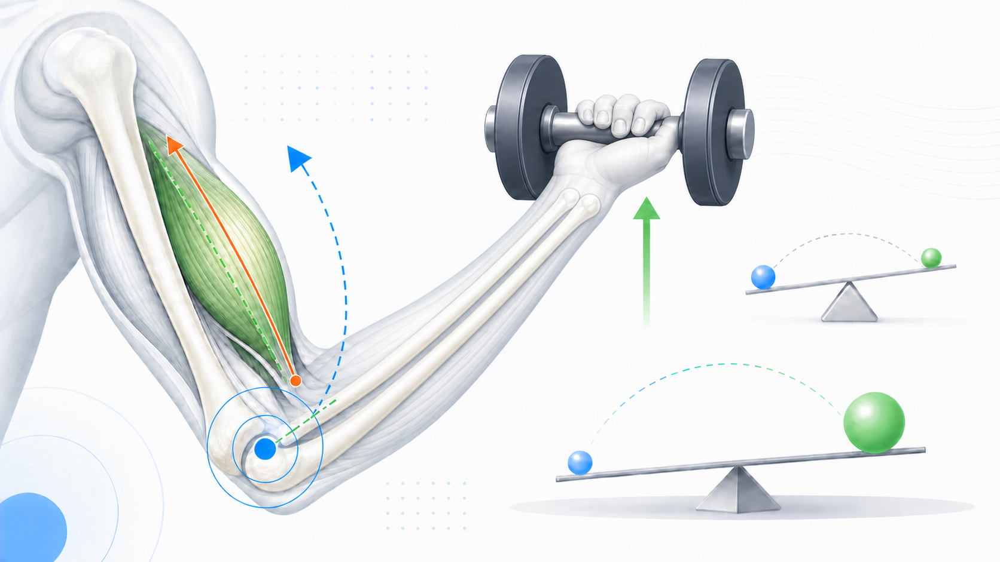
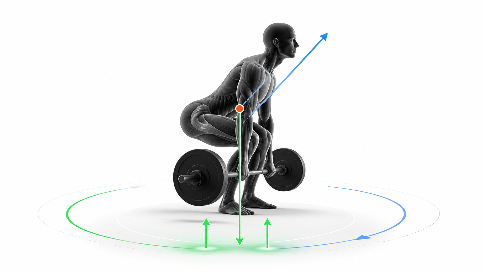
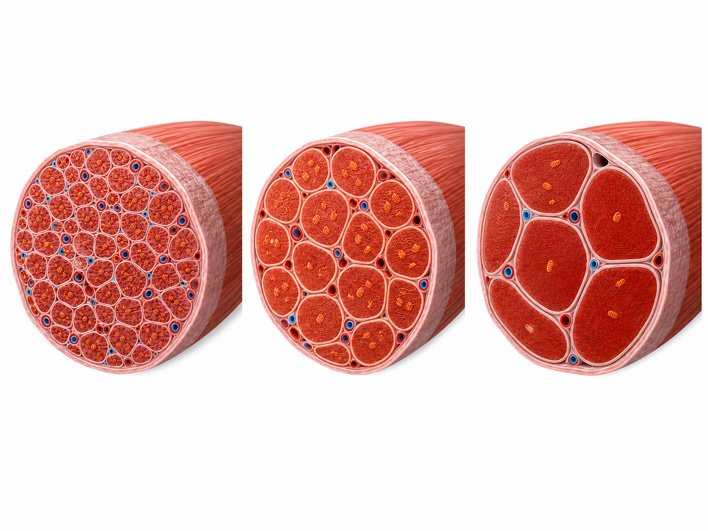
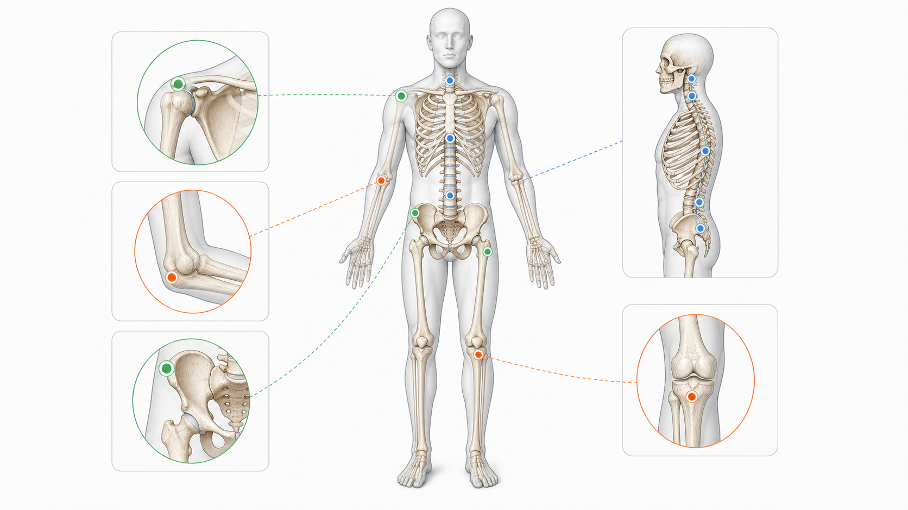

Day 16 · 杠杆系统与力矩

人体动作可以看成会移动的杠杆系统：关节是支点，肌肉附着处是力点，外部重量或身体重量是阻力点。动作难度不只看重量，还看力臂和阻力臂。
先抓公式：力矩 = 力 × 力臂。自由重量方向主要受重力控制，所以同一个哑铃在不同关节角度，阻力臂会变，最难点也会变。
打开 Day16 原学习页 →目标：把早上杠杆与力矩新知识压缩成可回忆框架，同时回拉 Day15、Day13、Day09、Day02。今天不推进进度，只复习。

人体动作可以看成会移动的杠杆系统：关节是支点，肌肉附着处是力点，外部重量或身体重量是阻力点。动作难度不只看重量，还看力臂和阻力臂。
先抓公式：力矩 = 力 × 力臂。自由重量方向主要受重力控制，所以同一个哑铃在不同关节角度，阻力臂会变，最难点也会变。
打开 Day16 原学习页 →



今日新知识 Day 16：杠杆三要素是什么？用二头弯举各对应哪里？
今日新知识 Day 16：力矩公式是什么？为什么侧平举在手臂接近水平时最难？
Day 15：为什么训练动作不能只看“重量多少”，还要看力的方向？
Day 15：硬拉里摩擦力和地面反作用力各有什么作用？
Day 13：深蹲下降、底部停顿、起立分别属于哪类收缩？
Day 13：为什么“收缩”不等于肌肉一定变短？
Day 9：I 型、IIa 型、IIx/IIb 型肌纤维各自关键词是什么？
Day 9：为什么不能说耐力训练把 IIa 直接训练成 I 型？
Day 2：说出 4 个常见骨性标志，并说明它们为什么对私教有用。
Day 2 场景题：客户做姿势评估时，你把髂前上棘和髂嵴混淆，可能带来什么问题？
| 易错点 | 错因 | 修正句 |
|---|---|---|
| 把力臂当骨头长度 | 没看力作用线。 | 力臂是支点到力作用线的垂直距离，不等于骨头全长。 |
| 觉得轻重量一定安全 | 忽略长阻力臂放大关节力矩。 | 轻重量加长力臂也能形成很高外部力矩。 |
| 把三类杠杆按动作名字背 | 没画三点位置。 | 先找支点、力点、阻力点，再判断排列。 |
| 把人体第三类杠杆当缺点 | 只看省力，不看速度和幅度。 | 人体多第三类杠杆，牺牲力量换速度、活动范围和精细控制。 |
| 把等长理解成没有工作 | 只看外部动作是否移动。 | 等长没有明显位移，但肌肉仍在持续产生张力。 |